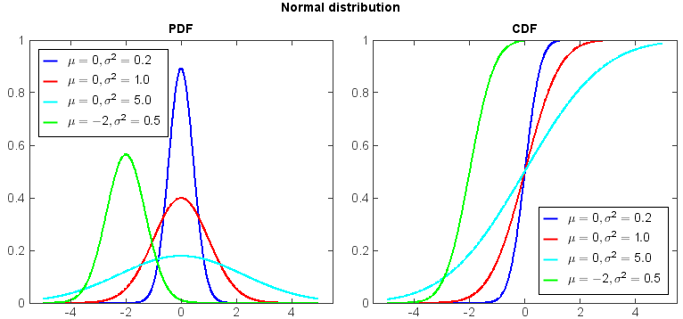

norm¶
- numeric.stats.norm¶
A normal continuous random variable.
Notes¶
The probability density function for norm is:
\[f(x) = \frac{\exp(-x^2/2)}{\sqrt{2\pi}}\]Examples:
from mipylib.numeric.stats import norm x = arange(-5., 5., 0.01) aa = [0, 0, 0, -2] bb = [0.2, 1, 5, 0.5] ss = ['-b', '-r', '-c', '-g'] #PDF subplot(1,2,1) for a,b,s in zip(aa,bb,ss): y = norm.pdf(x, a, sqrt(b)) plot(x, y, s, linewidth=2, label=r'$\mu = %i, \sigma^2 = %.1f$' % (a, b)) legend(loc='upper left', facecolor='w') ylim(0, 1) xlim(-5.5, 5.5) title('PDF') #CDF subplot(1,2,2) for a,b,s in zip(aa,bb,ss): y = norm.cdf(x, a, sqrt(b)) plot(x, y, s, linewidth=2, label=r'$\mu = %i, \sigma^2 = %.1f$' % (a, b)) legend(loc='lower right', facecolor='w') ylim(0, 1) xlim(-5.5, 5.5) title('CDF') suptitle('Normal distribution')
